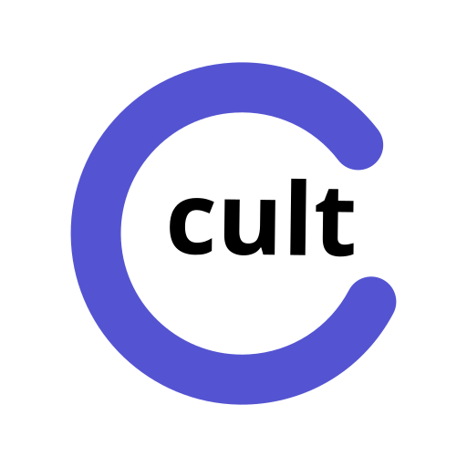

ScriptUI panel for Adobe After Effects. Send compositions and screenshots to your TMS (Crowdin or Phrase TMS), translate with full visual context, and import localized comps—without leaving your timeline.
Requirements Install Phrase TMS Crowdin Troubleshooting Data security Technical docs
The panel needs network access (TMS API via login.cultextensions.com, Cult Extensions auth). Without this, the panel may appear blank or fail silently.
New AE versions may require installing the panel again for that version.
If Windows blocks the install, run After Effects as Administrator once, install the panel, then reopen normally.
In-panel Readme (Settings tab) shows version, copyright, and data security summary.
Cult Connector connects After Effects to Phrase TMS through Cult Extensions. Translators work in Phrase with visual context (timeline screenshots in the Job Preview Package).
https://login.cultextensions.com/integrations/phrase/oauth/callback. Browser login uses cloud.memsource.com/web/oauth/authorize (EU) or us.cloud.memsource.com/web (US) — not the Platform dashboard card alone.Complete Allow in the browser tab opened by Cult Connector (on cloud.memsource.com or your US TMS host). Opening Phrase from the web dashboard alone does not connect the panel.
If the panel later shows not connected or API errors, use Disconnect then connect again (Phrase → OK → Allow). Cult stores your Phrase session on the server for this computer only.
Use AI Translation in the panel footer to send strings without new screenshots, run Phrase Language AI pre-translation, and duplicate compositions with translated text in After Effects.
[comp name]_[language].cloud.memsource.com).Choose Crowdin or Crowdin Enterprise at connect time. Workflow is similar: connect → project → send compositions with screenshots → import translations. Crowdin uses WYSIWYG screenshot tagging; Phrase uses Job Preview Package. See Technical documentation for API differences.
| Symptom | What to try |
|---|---|
| Panel blank or no network | Enable Allow Scripts to Write Files and Access Network in AE prefs; restart AE. |
| OAuth / login failed | Complete Allow in the browser tab opened by the panel; do not only open Phrase dashboard. Click Connect again. |
| Login timed out | Finish authorization within ~45 seconds; retry Connect. Check firewall/proxy for login.cultextensions.com. |
| Phrase account not allowed | Browser shows “account not allowed” — ask your Cult admin to add your Phrase email to the workspace allowlist in Cult Studio. |
| Not connected / HTTP 401 | Disconnect in the panel, then Phrase → OK → Allow again. Confirm Cult license is active. |
| Phrase session ended | Same as above — reconnect from the panel. Server uses TMS OAuth; reconnect when Phrase invalidates the access token (see TECHNICAL.html §2). |
| License bound to another device | Each seat allows one computer. Reset device binding in Cult Studio, or contact support. |
| Project list empty (Phrase) | Confirm projects exist at cloud.memsource.com for the same account. Click Refresh or re-select Phrase and OK. |
| Publish / finalize failed | Run export in order: strings → screenshots → publish. If it persists, see server error in the alert and Technical docs — Error handling (§5). |
| Import has no translations | Ensure Phrase jobs are complete for that file/language. Refresh project; retry import. |
| Wrong or missing screenshots | Add Snapshot markers on layers with motion; re-export. Phrase uses quarter-res timeline captures by default for speed. |
| Windows curl / upload errors | Ensure Windows 10+ with built-in curl. Check temp disk space. Retry export. |
For HTTP status codes, API paths, and server-side errors, see TECHNICAL.html.
login.cultextensions.com, then to your TMS (Phrase or Crowdin).Full architecture and authentication details: TECHNICAL.html.
Questions or licensing: contact@cultextensions.com
Product site: cultextensions.com
Phrase partner inquiries: partners@phrase.com